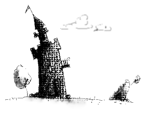
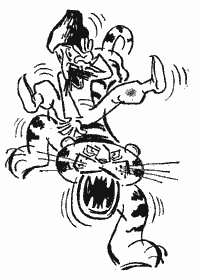

Назар-Смiливий (3)
Із весілля подавсь Назар далі, їхав-їхав, тай заїхав на поле зелене.
На зеленім на цім полі коня пастися пускає, прапорця втикає, у його затінку спати лягає.
А там, бач, жили сім братів-великанів—сім розбійників— у замку на горі , що поруч височіла, і скільки довкіл око сягає вони своїм вважали.
Великани тай помітили, що хтось там на поле їх припхався, з коня зліз.
Дивом вони здивувалися: то ж яке серце й скільки життів мусить буть в того зухвальця: мало – на поле їх заїхав, так ще й коня пускає!
А в кожного з тих великанів палиця була о двадцять п'ять пудів.
Тож вони оті свої двадцятип'ятипудові палицї беруть, йдуть.
Дісталися, і що ж бачать?
Кінь траву собі хрумкає, чоловік якийсь розлігся-спить, у головах прапорець стирчить, писане на прапорці вістить:
Назар-Сміливий: сила й міць!
Раз лупоне – юрма з копиць!
Вай, то це ж Назар-Сміливий!..
Лобуряки й пальці собі поприкусували, де стояли – прикіпили.
Адже звістка, рознесена хмільними весільчанами, й до цих місць сягнула. Тож в неборак ажно й слина посохла, завмерли – ждуть, поки Назар висипається, прокидається.
А той як прокинувсь та продер очі—ой, леле!—сім страхолюдних великанів стовбичать зусібіч, вже й здоровезні палиці на плечі повскидали: серце в бідолаги обірвалось й гулькнуло хтозна куди.
Схопивсь на рівні, під прапорець свій тулиться і – ну! – тремтіти, як лиш листочек восени тріпоче.
А здоровані, таке уздрівши, сполотніли і собі трясуться.
"Озливсь,"- белькочуть,- "зараз хрясне – всіх сімох вкладе".
Передніший на землю впав, заголосив:
- Назар-Сміливий: сила й міць,
Що влупиш раз – юрма з копиць!
Чували ми ім'я твоє грізне, і до того ж кортіло ще й вид твій побачити, аж ось і посміхнулось щастя нам – ти зволів власною ногою ступить до нашіх володінь.
Ми, сім братів, – слуги твої покірні , а в тім-ген замку на горі, сестра-красуня наша.
Уклінно просимо до нас завітати, хліб-сіль скуштувати...
Отоді тільки Назару попустило – одітхнув, на конячину видрався; а брати вже прапорця беруть, попереду йдуть, урочисто до замку ведуть.
І до того ж йому годять, шанують королівськіми почестями, так вже розписують його подвиги, так нахвалюють, що їхня сестра-красуня, з-за тих оповідок, тай закохалась у нього.
Що й казати, йому через те ще більш додалося шани-поваги.
* * *
Тим часом вигулькнув, хтозна звідки, в тій країні тигр – настрахав людей.
Хто тигра вб'є, хижака заб'є? Звісно – Назар-Сміливий. У кого ж ще звитяги стане проти тигра?
Прийшли разом до Назара. У небесах Бог єдиний, на землі Назар-Сміливий.
Тільки вчувши слово "тигр", Назар із переляку зірвавсь бігти—втекти до дому, до хати—а всі ж думають – рвонув тигра замордувати!
Наречена ледь встигла наздогнать, спинити, чого ж це, мовляв, голіруч вихопився? Зброю візьми, тоді йди.
Принесла та дала, щоб пішов ще одним подвигом свою славу звеличити.
Озброївсь Назар – вирушив.
І тільки-но забрів до лісу, скоріш на дерево дереться, щоб ані він тигру, ні тигр йому не здибався.
Скулився Назар на дереві, душа на макове зерня обернулася.
Та, на лиху годину, отой приблудний тигр і собі туди ж притьопав й під тим самісіньким деревом вмостився.
А Назар таких звірюк зроду ще не бачив, – перепудивсь, в очах посутеніло, руки-ноги обімліли і—торохк!—жвакнувсь з дерева на тигра.
Той од ляку – як підскочить!
Назар, з іще більшого переляку, тай укліщивсь тварюці в спину!
Отак—з нажаханим Назаром на спині—несеться тигр схарапуджений, не розбираючи де й куди.
Люди ж бачать—овва!—Назар-Сміливийохляп на тигрі скаче!
- Агов! Гей! Усі сюди! Назар-Сміливий верхи на тигрі ... Ну-мо й ми!..
Тай зусібіч із криком-гвалтом кинулись: ножами, шаблями, дубинням, каменюччям – забили тварину.
Назар оговтавсь, язика розпускає:
- Шкода,- каже,- нащо ж було вбивати? Такого я коня собі об'їздив... Було б мені дужче гнати...
Донеслась звістка до замку.
Чоловіки, жінота, старе й мале – всім миром сунуть Назара стрічати. Ще й пісню складають, виспівують:
У світі цім,
Між людством вciм,
Хто по силі під пару
Сміливцю Назару?
Мов сокіл-месник,
Мов грім небесний,
Як на пожар,
Помчав Назар.
Він звіра здолав.
Тигр коником став,
Горами гасав
Смілий Назар.
Нас врятував,
Спокій нам дав,
Повік хвала й слава
Сміливцю Назару!
Тай оженили Назара-Сміливого з красунею, сестрою великанів.
Сім дні в й сім ночей весілля гуляли, піснями молодих прославляли.